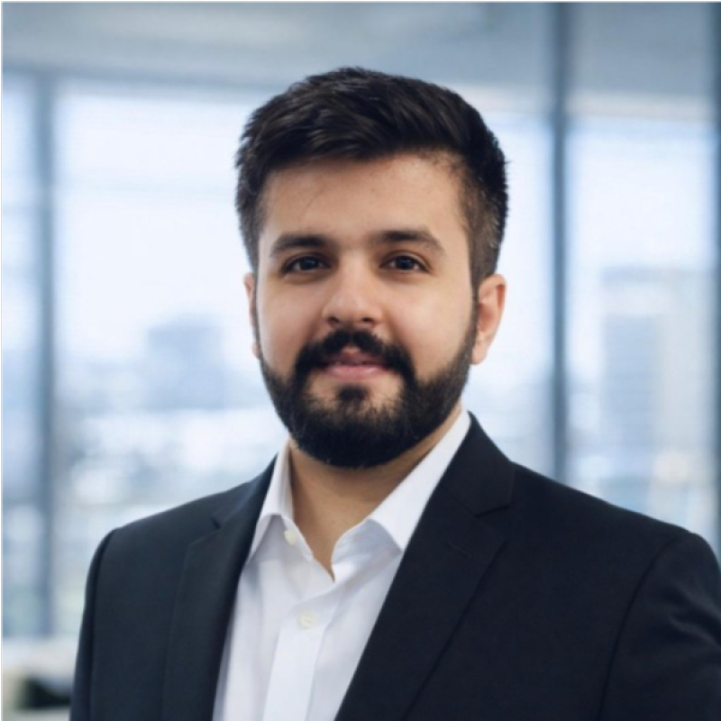

Security operations centre, national government entity
Brought in to help stand up the security operations function and own the assurance around it, then led SOC 2 Type II readiness as engagement lead through to a clear path to attestation.

Information security and technology risk. I assess how security controls hold up in practice, across four regions and some heavily regulated industries.
Seeking a Spring 2027 co-op in information security. Greater Boston.
I have spent my career checking whether security controls actually work. Now I am learning to build and break them.
At EY and Deloitte I led cybersecurity and technology risk engagements for banks, insurers, airports, and government bodies across the US, Canada, India, and the Middle East. The work ran from firewall rule bases and privileged access through to standing up a security operations function and getting an organisation audit-ready for attestation. I am now doing an MS in Cybersecurity at Northeastern, deliberately on the technical side: exploitation, reverse engineering, and systems security, with AI governance as an emerging specialty.
Brought in to help stand up the security operations function and own the assurance around it, then led SOC 2 Type II readiness as engagement lead through to a clear path to attestation.
Walked the floor at a major Canadian airport reviewing physical and OT security controls alongside the information systems. Identified maturity gaps and supported the remediation that led to certification.
Built the program end to end: vendor due diligence, risk tiering logic, monitoring thresholds, and escalation routing across the full vendor lifecycle.
Assessed controls over Azure environments and CI/CD pipelines, covering change management, approvals, and access, as part of SOX and ITGC programs. Cut engagement effort by around a quarter by sharpening scoping and dropping procedures that added nothing.
Wrote incident management playbooks defining response procedures and escalation paths, ran simulations with senior leadership to test them under pressure, and worked with a client CISO on organisation-wide awareness against phishing and social engineering.